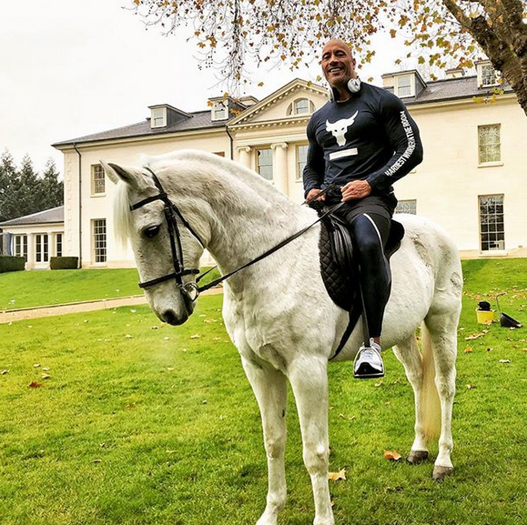
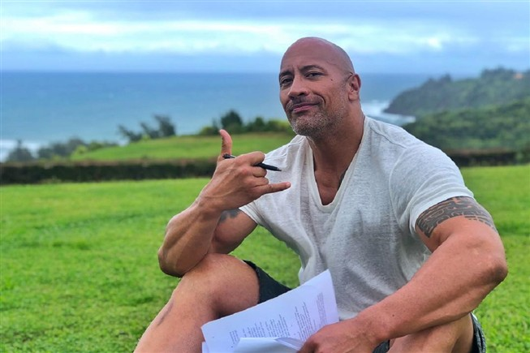

O ator Dwayne Johnson, que ficou conhecido com a saga "Velocidade Furiosa", vai mudar-se temporariamente para Inglaterra, para filmar "Hobbs & Shaws". E vai ficar alojado numa casa com história...
The Rock, como é conhecido, arrendou uma mansão em Surrey que pertenceu a Angelina Jolie e Brad Pitt, na época em que eram casados.
Durante o tempo em que estiver a rodar o spin-off de "Velocidade Furiosa", o ator, de 46 anos, não vai ficar num hotel, como é habitual nestas circunstâncias, mas escolheu uma propriedade que lhe pode dar todo o conforto e privacidade de que precisa.
Localizada em Surrey, um condado no sudeste de Inglaterra, a mansão conta com oito quartos, oito casas de banho, piscina coberta, uma área verde maior do que muitos parques públicos e espaço de sobra para Dwayne montar a sua academia particular.
É que o ator de filmes de ação e comédia, também conhecido pelos seus músculos esculpidos, tem um ginásio privado e móvel, a que deu o nome de Iron Paradise (ou seja, Paraíso de Ferro), que transporta a cada viagem que faz.
A academia, que até cozinha tem, é montada dentro de uma tenda, permitindo ao ator poder puxar pelo físico em qualquer local onde esteja.
